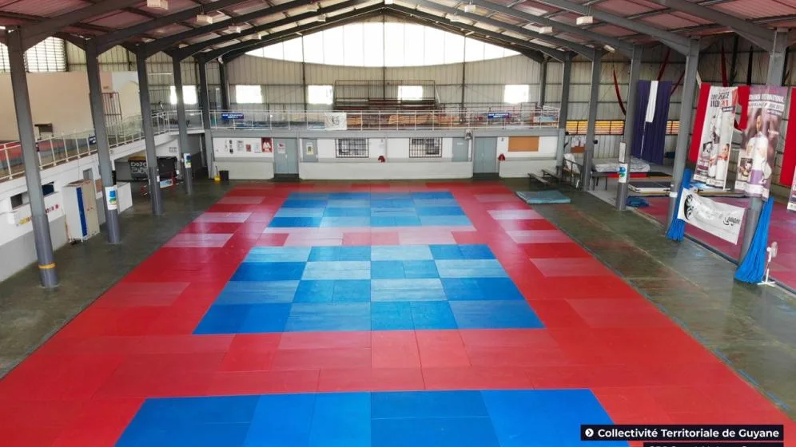

VOTRE VENUE
AVANT DE
VOUS DÉPLACER
Consultez les horaires du rendez-vous et les indications de l’organisateur. Adresse complète, accès, stationnement et accessibilité : À confirmer. Ouvrir dans Maps ↗
LE DOJO DE SUZINI
Découvrez le dojo de Suzini, sa place dans la vie du judo guyanais et les activités qui y sont accueillies.

SUZINI · GUYANELE LIEU
Parcourez les espaces en photos et retrouvez les rendez-vous annoncés à Suzini. Histoire, gestionnaire, équipements et conditions d’accès : À confirmer.
VOTRE VENUE
Consultez les horaires du rendez-vous et les indications de l’organisateur. Adresse complète, accès, stationnement et accessibilité : À confirmer. Ouvrir dans Maps ↗
ORGANISER UN RENDEZ-VOUS
Contactez le gestionnaire pour connaître les possibilités et les conditions d’accueil. Interlocuteur et modalités : À confirmer. Contacter la ligue ↗
ET AUSSI À SUZINI
Retrouvez les autres activités confirmées au dojo et leurs organisateurs. Pour les cours et les inscriptions, renseignez-vous auprès de la structure concernée.
Rencontres et compétitions. À confirmer
Entretien physique. À confirmer
Pratique martiale adulte. À confirmer